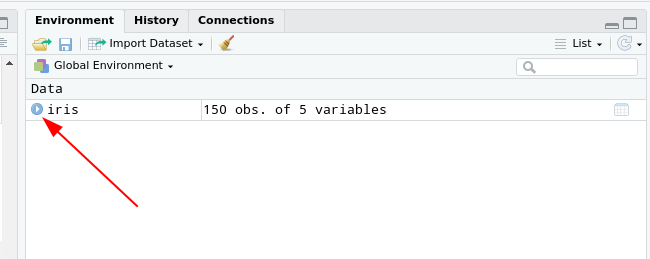
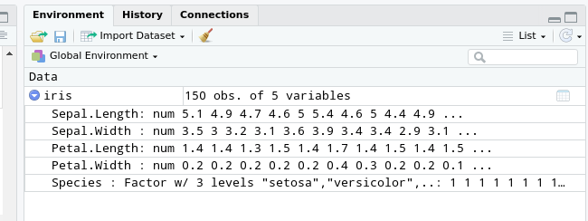

Daten manipulieren
Datensätze in R
Wie alle anderen Programme zur statistischen Auswertung hat R natürlich neben den Vektoren auch rechteckige Datenformate.
Das typische rechteckige Datenformat in base R ist der data.frame.
Im Prinzip nichts anderes, als spaltenweise zusammengeklebte Vektoren.
Der Konstruktor für ein solches Objekt heißt ist die gleichnamige Funktion, die die Spalten als benannte Argumente nimmt:
df <- data.frame(a = 1:3,
b = c(TRUE, FALSE, TRUE),
c = c('a','b','c'))
df## a b c
## 1 1 TRUE a
## 2 2 FALSE b
## 3 3 TRUE cDatensätze in R
Das Indizieren im Datensatz geht dann am Lesbarsten, durch das Angeben der gewünschten Spalte mit dem $-Operator und der Auswahl der Zeile durch den schon bekannten []-Operator.
df$c[2] ## 2. Wert in der 'c'-Spalte.## [1] "b"
Wie könnte ich den 3. Wert in der b-Spalte indizieren?
df$b[3]
Datensätze in R
Der iris-Datensatz ist ein im Grundumfang von R mitgelieferter Datensatz, der historische botanische Daten nach Anderson (1935) enthält.
iris## Sepal.Length Sepal.Width Petal.Length
## 1 5.1 3.5 1.4
## 2 4.9 3.0 1.4
## 3 4.7 3.2 1.3
## 4 4.6 3.1 1.5
## 5 5.0 3.6 1.4
## 6 5.4 3.9 1.7
## 7 4.6 3.4 1.4
## 8 5.0 3.4 1.5
## 9 4.4 2.9 1.4
## 10 4.9 3.1 1.5
## 11 5.4 3.7 1.5
## 12 4.8 3.4 1.6
## 13 4.8 3.0 1.4
## 14 4.3 3.0 1.1
## 15 5.8 4.0 1.2
## 16 5.7 4.4 1.5
## 17 5.4 3.9 1.3
## 18 5.1 3.5 1.4
## 19 5.7 3.8 1.7
## 20 5.1 3.8 1.5
## 21 5.4 3.4 1.7
## 22 5.1 3.7 1.5
## 23 4.6 3.6 1.0
## 24 5.1 3.3 1.7
## 25 4.8 3.4 1.9
## 26 5.0 3.0 1.6
## 27 5.0 3.4 1.6
## 28 5.2 3.5 1.5
## 29 5.2 3.4 1.4
## 30 4.7 3.2 1.6
## 31 4.8 3.1 1.6
## 32 5.4 3.4 1.5
## 33 5.2 4.1 1.5
## 34 5.5 4.2 1.4
## 35 4.9 3.1 1.5
## 36 5.0 3.2 1.2
## 37 5.5 3.5 1.3
## 38 4.9 3.6 1.4
## 39 4.4 3.0 1.3
## 40 5.1 3.4 1.5
## 41 5.0 3.5 1.3
## 42 4.5 2.3 1.3
## 43 4.4 3.2 1.3
## 44 5.0 3.5 1.6
## 45 5.1 3.8 1.9
## 46 4.8 3.0 1.4
## 47 5.1 3.8 1.6
## 48 4.6 3.2 1.4
## 49 5.3 3.7 1.5
## 50 5.0 3.3 1.4
## 51 7.0 3.2 4.7
## 52 6.4 3.2 4.5
## 53 6.9 3.1 4.9
## 54 5.5 2.3 4.0
## 55 6.5 2.8 4.6
## 56 5.7 2.8 4.5
## 57 6.3 3.3 4.7
## 58 4.9 2.4 3.3
## 59 6.6 2.9 4.6
## 60 5.2 2.7 3.9
## 61 5.0 2.0 3.5
## 62 5.9 3.0 4.2
## 63 6.0 2.2 4.0
## 64 6.1 2.9 4.7
## 65 5.6 2.9 3.6
## 66 6.7 3.1 4.4
## 67 5.6 3.0 4.5
## 68 5.8 2.7 4.1
## 69 6.2 2.2 4.5
## 70 5.6 2.5 3.9
## 71 5.9 3.2 4.8
## 72 6.1 2.8 4.0
## 73 6.3 2.5 4.9
## 74 6.1 2.8 4.7
## 75 6.4 2.9 4.3
## 76 6.6 3.0 4.4
## 77 6.8 2.8 4.8
## 78 6.7 3.0 5.0
## 79 6.0 2.9 4.5
## 80 5.7 2.6 3.5
## 81 5.5 2.4 3.8
## 82 5.5 2.4 3.7
## 83 5.8 2.7 3.9
## 84 6.0 2.7 5.1
## 85 5.4 3.0 4.5
## 86 6.0 3.4 4.5
## 87 6.7 3.1 4.7
## 88 6.3 2.3 4.4
## 89 5.6 3.0 4.1
## 90 5.5 2.5 4.0
## 91 5.5 2.6 4.4
## 92 6.1 3.0 4.6
## 93 5.8 2.6 4.0
## 94 5.0 2.3 3.3
## 95 5.6 2.7 4.2
## 96 5.7 3.0 4.2
## 97 5.7 2.9 4.2
## 98 6.2 2.9 4.3
## 99 5.1 2.5 3.0
## 100 5.7 2.8 4.1
## 101 6.3 3.3 6.0
## 102 5.8 2.7 5.1
## 103 7.1 3.0 5.9
## 104 6.3 2.9 5.6
## 105 6.5 3.0 5.8
## 106 7.6 3.0 6.6
## 107 4.9 2.5 4.5
## 108 7.3 2.9 6.3
## 109 6.7 2.5 5.8
## 110 7.2 3.6 6.1
## 111 6.5 3.2 5.1
## 112 6.4 2.7 5.3
## 113 6.8 3.0 5.5
## 114 5.7 2.5 5.0
## 115 5.8 2.8 5.1
## 116 6.4 3.2 5.3
## 117 6.5 3.0 5.5
## 118 7.7 3.8 6.7
## 119 7.7 2.6 6.9
## 120 6.0 2.2 5.0
## 121 6.9 3.2 5.7
## 122 5.6 2.8 4.9
## 123 7.7 2.8 6.7
## 124 6.3 2.7 4.9
## 125 6.7 3.3 5.7
## 126 7.2 3.2 6.0
## 127 6.2 2.8 4.8
## 128 6.1 3.0 4.9
## 129 6.4 2.8 5.6
## 130 7.2 3.0 5.8
## 131 7.4 2.8 6.1
## 132 7.9 3.8 6.4
## 133 6.4 2.8 5.6
## 134 6.3 2.8 5.1
## 135 6.1 2.6 5.6
## 136 7.7 3.0 6.1
## 137 6.3 3.4 5.6
## 138 6.4 3.1 5.5
## 139 6.0 3.0 4.8
## 140 6.9 3.1 5.4
## 141 6.7 3.1 5.6
## 142 6.9 3.1 5.1
## 143 5.8 2.7 5.1
## 144 6.8 3.2 5.9
## 145 6.7 3.3 5.7
## 146 6.7 3.0 5.2
## 147 6.3 2.5 5.0
## 148 6.5 3.0 5.2
## 149 6.2 3.4 5.4
## 150 5.9 3.0 5.1
## Petal.Width Species
## 1 0.2 setosa
## 2 0.2 setosa
## 3 0.2 setosa
## 4 0.2 setosa
## 5 0.2 setosa
## 6 0.4 setosa
## 7 0.3 setosa
## 8 0.2 setosa
## 9 0.2 setosa
## 10 0.1 setosa
## 11 0.2 setosa
## 12 0.2 setosa
## 13 0.1 setosa
## 14 0.1 setosa
## 15 0.2 setosa
## 16 0.4 setosa
## 17 0.4 setosa
## 18 0.3 setosa
## 19 0.3 setosa
## 20 0.3 setosa
## 21 0.2 setosa
## 22 0.4 setosa
## 23 0.2 setosa
## 24 0.5 setosa
## 25 0.2 setosa
## 26 0.2 setosa
## 27 0.4 setosa
## 28 0.2 setosa
## 29 0.2 setosa
## 30 0.2 setosa
## 31 0.2 setosa
## 32 0.4 setosa
## 33 0.1 setosa
## 34 0.2 setosa
## 35 0.2 setosa
## 36 0.2 setosa
## 37 0.2 setosa
## 38 0.1 setosa
## 39 0.2 setosa
## 40 0.2 setosa
## 41 0.3 setosa
## 42 0.3 setosa
## 43 0.2 setosa
## 44 0.6 setosa
## 45 0.4 setosa
## 46 0.3 setosa
## 47 0.2 setosa
## 48 0.2 setosa
## 49 0.2 setosa
## 50 0.2 setosa
## 51 1.4 versicolor
## 52 1.5 versicolor
## 53 1.5 versicolor
## 54 1.3 versicolor
## 55 1.5 versicolor
## 56 1.3 versicolor
## 57 1.6 versicolor
## 58 1.0 versicolor
## 59 1.3 versicolor
## 60 1.4 versicolor
## 61 1.0 versicolor
## 62 1.5 versicolor
## 63 1.0 versicolor
## 64 1.4 versicolor
## 65 1.3 versicolor
## 66 1.4 versicolor
## 67 1.5 versicolor
## 68 1.0 versicolor
## 69 1.5 versicolor
## 70 1.1 versicolor
## 71 1.8 versicolor
## 72 1.3 versicolor
## 73 1.5 versicolor
## 74 1.2 versicolor
## 75 1.3 versicolor
## 76 1.4 versicolor
## 77 1.4 versicolor
## 78 1.7 versicolor
## 79 1.5 versicolor
## 80 1.0 versicolor
## 81 1.1 versicolor
## 82 1.0 versicolor
## 83 1.2 versicolor
## 84 1.6 versicolor
## 85 1.5 versicolor
## 86 1.6 versicolor
## 87 1.5 versicolor
## 88 1.3 versicolor
## 89 1.3 versicolor
## 90 1.3 versicolor
## 91 1.2 versicolor
## 92 1.4 versicolor
## 93 1.2 versicolor
## 94 1.0 versicolor
## 95 1.3 versicolor
## 96 1.2 versicolor
## 97 1.3 versicolor
## 98 1.3 versicolor
## 99 1.1 versicolor
## 100 1.3 versicolor
## 101 2.5 virginica
## 102 1.9 virginica
## 103 2.1 virginica
## 104 1.8 virginica
## 105 2.2 virginica
## 106 2.1 virginica
## 107 1.7 virginica
## 108 1.8 virginica
## 109 1.8 virginica
## 110 2.5 virginica
## 111 2.0 virginica
## 112 1.9 virginica
## 113 2.1 virginica
## 114 2.0 virginica
## 115 2.4 virginica
## 116 2.3 virginica
## 117 1.8 virginica
## 118 2.2 virginica
## 119 2.3 virginica
## 120 1.5 virginica
## 121 2.3 virginica
## 122 2.0 virginica
## 123 2.0 virginica
## 124 1.8 virginica
## 125 2.1 virginica
## 126 1.8 virginica
## 127 1.8 virginica
## 128 1.8 virginica
## 129 2.1 virginica
## 130 1.6 virginica
## 131 1.9 virginica
## 132 2.0 virginica
## 133 2.2 virginica
## 134 1.5 virginica
## 135 1.4 virginica
## 136 2.3 virginica
## 137 2.4 virginica
## 138 1.8 virginica
## 139 1.8 virginica
## 140 2.1 virginica
## 141 2.4 virginica
## 142 2.3 virginica
## 143 1.9 virginica
## 144 2.3 virginica
## 145 2.5 virginica
## 146 2.3 virginica
## 147 1.9 virginica
## 148 2.0 virginica
## 149 2.3 virginica
## 150 1.8 virginicaÜbersicht über Datensatz verschaffen
Das ist natürlich ein bisschen unübersichtlich, wie kann man damit umgehen?
1. Möglichkeit:
Wenn man iris explizit in das Environment nimmt, kann man die Oberfläche von RStudio nutze, um sich einen Überblick zu verschaffen2:
iris <- iris

Übersicht über Datensatz verschaffen
2. Möglichkeit:
Die summary-Funktion, die genau das macht, was ihr Name suggeriert:
summary(iris)## Sepal.Length Sepal.Width Petal.Length
## Min. :4.300 Min. :2.000 Min. :1.000
## 1st Qu.:5.100 1st Qu.:2.800 1st Qu.:1.600
## Median :5.800 Median :3.000 Median :4.350
## Mean :5.843 Mean :3.057 Mean :3.758
## 3rd Qu.:6.400 3rd Qu.:3.300 3rd Qu.:5.100
## Max. :7.900 Max. :4.400 Max. :6.900
## Petal.Width Species
## Min. :0.100 setosa :50
## 1st Qu.:0.300 versicolor:50
## Median :1.300 virginica :50
## Mean :1.199
## 3rd Qu.:1.800
## Max. :2.500Aufgabe: Deskriptive Kennwerte berechnen
Wir wollen für diesen Datensatz jetzt die folgenden Schritte der Auswertung vollziehen:
Ausschluss der Blumen, die breitere Blütenblätter als das 1.5-fache der mittleren Blütenblätter haben und Kelche, die kürzer als das Mittel der Kelchlänge sind
Darstellung der Mittelwerte und Streuungen der Blütenblattlänge und -breite pro verbleibende Spezies als Tabelle
Aufgabe: Base-R Lösung
df <- iris[iris$Petal.Width <= 1.5 * mean(iris$Petal.Width) &
iris$Sepal.Length >= mean(iris$Sepal.Length),]
means <- aggregate(cbind(df$Petal.Length,df$Petal.Width),
by = list(Species = df$Species),
FUN = mean)
sds <- aggregate(cbind(df$Petal.Length,df$Petal.Width),
by = list(Species = df$Species),
FUN = sd)
tab <- data.frame(means, sds[,2:3])
names(tab)[2:5] = c('m_Length', 'm_Width', 'sd_Length', 'sd_Width')
tab## Species m_Length m_Width sd_Length
## 1 versicolor 4.560 1.424 0.2783882
## 2 virginica 5.375 1.500 0.3862210
## sd_Width
## 1 0.14798649
## 2 0.08164966Auftritt tidyverse
Die selbe Aufgabe wie gerade, jetzt mit dem tidyverse:
library(tidyverse)
iris %>%
filter(Petal.Width <= 1.5 * mean(Petal.Width) &
Sepal.Length >= mean(Sepal.Length)) %>%
group_by(Species) %>%
summarise(m_Length = mean(Petal.Length),
sd_Length = sd(Petal.Length),
m_Width = mean(Petal.Width),
sd_Width = sd(Petal.Width))## `summarise()` ungrouping output (override with `.groups` argument)## # A tibble: 2 x 5
## Species m_Length sd_Length m_Width sd_Width
## <fct> <dbl> <dbl> <dbl> <dbl>
## 1 versicolor 4.56 0.278 1.42 0.148
## 2 virginica 5.38 0.386 1.5 0.0816tidy aggregation
Das tidyverse ist eine Sammlung von Paketen, deren Hauptziel es ist, Datenaufbereitung in R intuitiver und leichter lesbar zu machen.
Ein zentrales Element dabei ist der %>%-Operator, die sogenannte Pipeline. Beim Skript-Lesen und -Schreiben kann man sich diese am Besten als ‘dann’ vorstellen
Mit ihrer Hilfe werden Aufbereitungsschritte in einer stringenten Reihe an Operationen formuliert, die sich am Besten als Satz verstehen lassen.
Da die Funktionen im tidyverse alle mit einfachen Verben benannt sind, lässt sich die Operation von eben auch so lesen.
tidy aggregation
iris %>%
Nimm iris, dann …
filter(Petal.Width <= 1.5 * mean(Petal.Width) &
Sepal.Length >= mean(Sepal.Length)) %>% … filter Zeilenweise nach den gesetzten Regeln, dann…
group_by(Species) %>% …gruppiere nach der Spezies, dann…
summarise(m_Length = mean(Petal.Length),
sd_Length = sd(Petal.Length),
m_Width = mean(Petal.Width),
sd_Width = sd(Petal.Width))… berechne die angegebenen Kenngrößen über die Gruppen.
tidy aggregation
Zweite Beispielaufgabe:
Wir möchten für den iris-Datensatz:
Eine Spalte hinzufügen, die die z-transformierte Blattlänge enthält
Eine Spalte hinzufügen, die als character das Ergebnis eines Mediansplits der gerade erstellten Variable enthält
Einen Datensatz erstellen, der nur die Spezies, die z-Transformierte und die Mediansplit-Variable enthält
Die Häufigkeiten der Kombinationen von Mediansplit-Gruppe und Spezies auszählen
tidy aggregation
df <- iris %>%
mutate(z_length = (Petal.Length-mean(Petal.Length))/sd(Petal.Length),
med_split = ifelse(z_length >= median(z_length),
'upper',
'lower')) %>%
select(Species, z_length, med_split) tidy aggregation
Hat das geklappt?
Wie könnte ich das überprüfen?
summary(df)## Species z_length
## setosa :50 Min. :-1.5623
## versicolor:50 1st Qu.:-1.2225
## virginica :50 Median : 0.3354
## Mean : 0.0000
## 3rd Qu.: 0.7602
## Max. : 1.7799
## med_split
## Length:150
## Class :character
## Mode :character
##
##
## tidy aggregation
Jetzt noch Häufigkeiten auszählen:
df %>%
group_by(Species, med_split) %>%
summarise(n = n())## `summarise()` regrouping output by 'Species' (override with `.groups` argument)## # A tibble: 4 x 3
## # Groups: Species [3]
## Species med_split n
## <fct> <chr> <int>
## 1 setosa lower 50
## 2 versicolor lower 25
## 3 versicolor upper 25
## 4 virginica upper 50tidy aggregation
df %>%
Nimm df, dann …
group_by(Species, med_split) %>%
… gruppiere nach Species und med_split, dann…
summarise(n = n()) …Zähle die absoluten Häufigkeiten aus.
Aufgabe
Machen Sie sich mit dem swiss-Datensatz vertraut. Lesen Sie dazu auch die Hilfeseite zu dem Datensatz.
Erstellen Sie mit Hilfe einer pipeline einen Datensatz, der…
den Anteil der männlichen Population in der Landwirtschaft, die Kindersterblichkeit, das Bildungsniveau und den Anteil der katholischen Familien in Prozent enthält
nur Provinzen enthält, deren Einwohner zu mehr als 10% Bestnoten bei der Armee-Untersuchung erhalten haben
eine numerische Variable enthält, die für die so ausgewählten Fälle einen Mediansplit der Kindersterblichkeit codiert.
Erstellen Sie anschließend eine kurze pipeline, die den Datensatz mit dem Absteigenden Bildungsniveau als ersten Sortierschlüssel und dem aufsteigenden Anteil katholischer Familien als zweitem Schlüssel sortiert. Nutzen Sie dafür die Hilfeseite der arrange-Funktion.
Regressionen in R
Viele Modelle in R benutzen eineformula, um die Modellparameter festzulegen.Dabei besteht jede
formula erstmal aus einem Vorhersage- und einem vorhergesagten Term, die durch eine Tilde getrennt werden:Vorhergesagt ~ Vorhersage
Die Syntax dafür folgt dem folgenden Schema:
| Operator | Bedeutung in Modellformel |
|---|---|
| + | den folgenden Vorhersageterm hinzufügen |
| - | den folgenden Vorhersageterm ausschließen |
| <A> : <B> | Interaktion AxB als Vorhersageterm |
| <A> * <B> | alle additiven und Interaktionseffekte |
| 1 | absoluter Term (Gesamterwartungswert) |
Beispiel-Terme
Die Vohersage von A durch B:
A ~ B
Die Vohersage von A durch B und C:
A ~ B + C
Die Vohersage von A durch die Interaktion von B und C:
A ~ B : C
Die Vohersage von A durch B, C und die Interaktion von B und C:
A ~ B * C
Regression
Alle linearen Regressionen lassen sich mit dem base-Umfang von R umsetzen.
Dazu übergibt man einfach die gewünschte Modellformel der lm(für linear model)-Funktion. Mit dem data-Argument lässt sich außerdem der Datensatz festlegen, auf dessen Basis das Modell gerechnet werden soll.
Als Beispiel rechnen wir hier mal die Vorhersage der Blatt-Breite duch die Kelch-Länge der Blumen im iris-Datansatz.
model <- lm(Petal.Width ~ Sepal.Length,data = iris)Regression
Der einfache Ausdruck des Modells sind erstmal nur die Schätzer:
model##
## Call:
## lm(formula = Petal.Width ~ Sepal.Length, data = iris)
##
## Coefficients:
## (Intercept) Sepal.Length
## -3.2002 0.7529Mit der summary-Funktion lässt sich dann auch eine Regresssionsanalyse durchführen.
Regressionsanalyse
summary(model)##
## Call:
## lm(formula = Petal.Width ~ Sepal.Length, data = iris)
##
## Residuals:
## Min 1Q Median 3Q Max
## -0.96671 -0.35936 -0.01787 0.28388 1.23329
##
## Coefficients:
## Estimate Std. Error t value Pr(>|t|)
## (Intercept) -3.20022 0.25689 -12.46 <2e-16
## Sepal.Length 0.75292 0.04353 17.30 <2e-16
##
## (Intercept) ***
## Sepal.Length ***
## ---
## Signif. codes:
## 0 '***' 0.001 '**' 0.01 '*' 0.05 '.' 0.1 ' ' 1
##
## Residual standard error: 0.44 on 148 degrees of freedom
## Multiple R-squared: 0.669, Adjusted R-squared: 0.6668
## F-statistic: 299.2 on 1 and 148 DF, p-value: < 2.2e-16Aufgabe
Bearbeiten Sie auf Basis des eben erstellten Teil-Datensatzes von swiss die folgenden Aufgaben:
Ein lineares Regressionsmodell mit dem Bildungsniveau als Kriterium und dem Anteil katholischer Familien als Prädiktor
Rufen Sie die Hilfeseiten der
tibble-Funktion auf und erstellen Sie mit Ihrer Hilfe einen Datensatz, der Prädiktor und Kriterium enthält.
Fügen Sie dann diesem Datensatz in einerpipelinemit Hilfe dermutate-Funktion eine Variable mit den vorhergesagten Werten und eine mit den Residuen hinzu.
Rufen Sie dafür die Hilfeseiten derfittedund derresiduals- Funktionen auf.
Aufgabe
- Ein lineares Regressionsmodell mit der Kindersterblichkeit als Kriterium und den folgenden Prädiktoren:
- dem in der Landwirtschaft arbeitenden Anteil der Bevölkerung
- dem Bildungsniveau
- der Interaktion des Anteils katholischer Familien und des Bildungsniveaus
- Berechnen Sie auf Basis dieses zweiten Modells das korrigierte \(R^2\)
Literatur
Aufgabe 1
Machen Sie sich mit dem swiss-Datensatz vertraut. Lesen Sie dazu auch die Hilfeseite zu dem Datensatz.
Erstellen Sie mit Hilfe einer pipeline einen Datensatz, der…
nur Provinzen enthält, deren Einwohner zu mehr als 10% und weniger als 35% Bestnoten bei der Armee-Untersuchung erhalten haben
den Anteil der männlichen Population in der Landwirtschaft, die Kindersterblichkeit, das Bildungsniveau und den Anteil der katholischen Familien enthält
eine numerische Variable enthält, die für die so ausgewählten Fälle einen Mediansplit der Kindersterblichkeit codiert.
Erstellen Sie anschließend eine kurze pipeline, die den Datensatz mit dem Absteigenden Bildungsniveau als ersten Sortierschlüssel und dem aufsteigenden Anteil katholischer Familien als zweitem Schlüssel sortiert. Nutzen Sie dafür die Hilfeseite der arrange-Funktion.
Aufgabe 2
Bearbeiten Sie auf Basis des eben erstellten Teil-Datensatzes von swiss die folgenden Aufgaben:
Ein lineares Regressionsmodell mit dem Bildungsniveau als Kriterium und dem Anteil katholischer Familien als Prädiktor
Erstellen Sie einen Datensatz mit dem Namen
reg_swiss, der Prädiktor und Kriterium enthält. Erstellen Sie dafür auch wieder eine pipeline, in die Sie Ihren Unterdatensatz geben.
Fügen Sie dann diesem Datensatz in einerpipelinemit Hilfe dermutate-Funktion eine Variable mit den vorhergesagten Werten und eine mit den Residuen hinzu.
Rufen Sie dafür die Hilfeseiten derfittedund derresiduals- Funktionen auf.Ein lineares Regressionsmodell mit der Kindersterblichkeit als Kriterium und den folgenden Prädiktoren:
- dem in der Landwirtschaft arbeitenden Anteil der Bevölkerung
- dem Bildungsniveau
- der Interaktion des Anteils katholischer Familien und des Bildungsniveaus
Lassen Sie sich für dieses zweiten Modells das korrigierte \(R^2\) ausgeben
Dabei nutzt die RStudio-IDE aber nur die
str()(für structure)-Funktion.↩︎